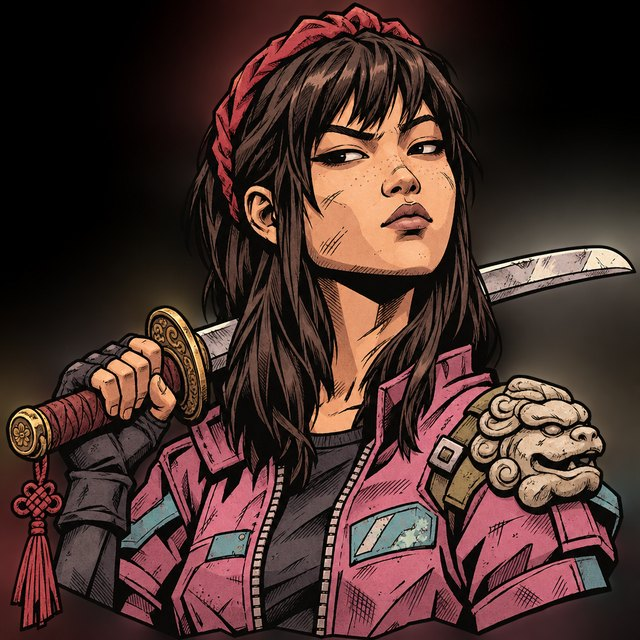
Floors 1 to 100
Rin Sumiya
The ronin
Hana's bodyguard for three years, dismissed a week before the gala for saying what she saw. Dry, terse, unimpressed. She walks in through the lobby with her family's sword.
The game
Cut Cut Cut is an isometric sword game for iPhone, played in landscape. One woman, one sword, one hundred floors. The story underneath is earnest. Everything on the surface is funny.
Background
A 100-floor tower in a crowded megacity, built by Hōrai Life, a longevity company named after the mythical mountain where no one dies.
Residents bought Eternal Residency: a home plus a lifetime course of the company's anti-ageing treatment. The slogan was Live forever. Never leave.
On the night of the Ascension Gala, 12,000 residents, staff and guests were inside. The founder released the final treatment as a mist through the ventilation, to "ascend" everyone at once. It worked: none of them can die now. They just stopped being people.
The quarantine system sealed everything. Elevators parked, fire shutters dropped, only emergency power stayed on. A military cordon closed the block, and anything sent in did not come back out.
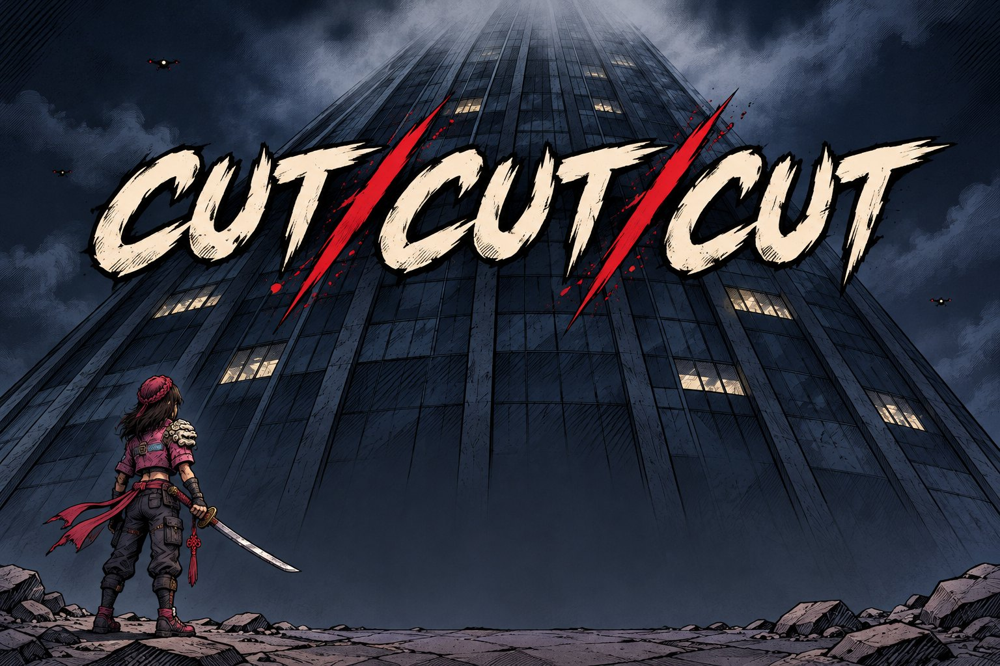
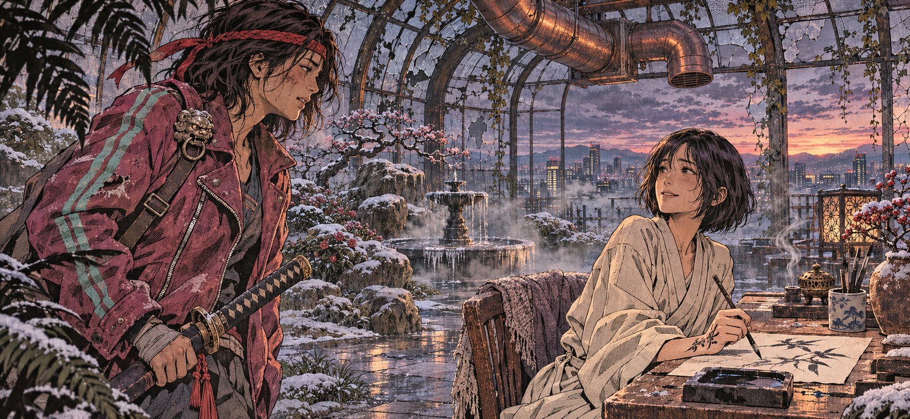
The ronin
For three years Rin Sumiya was bodyguard to Hana Amagiri, the founder's terminally ill daughter, on the top floor. In the long hours, Hana taught her calligraphy.
A week before the gala Rin found the trial floors and saw what the treatment did to its first subjects. She confronted the founder. He dismissed her and had her escorted out. That makes her a ronin in the literal sense: a samurai whose master let her go.
She was on the street when the shutters came down. Then came one text from Hana: Come up. Please.
She walks in through the lobby door with Sumikiri, the "ink-cutter": a family sword forged, the legend says, to cut down things that should already be dead. For four hundred years it was a museum piece. When it cuts the undying, it bleeds ink.
How it plays
Built for a phone held sideways. No virtual buttons to hunt for: the left half of the screen moves Rin, the right half is her sword.
Tap to cut, hold to keep cutting. When the ring on a target turns gold, tap Combo. Swipe in any direction to roll through an incoming swing. Stamina decides how long you can keep it up.
Landing hits charges it. Rin kicks her katana across the room and the last stroke lands in darkness. It clears a room of ordinary undying, and only wounds a guardian.
A new climb deals eight cards and equips five. The poker rank of those five is your power. On the stairs you take a card or pass; every third floor you may keep the hand or change up to three cards.
Sixteen named guardians, each with its own way of fighting: a wrench sweep, a step to your blind side, frost that freezes you in place, a brass bell whose wave you roll through.
From floor 21 the Expedition is in the building: sealed suits, rifles, a paying client. You find them shooting the undying. Interrupt a retrieval team and their technology becomes a card on offer.
A choice at the tower core on floor 50 changes the routes above it. A choice in the garden on floor 100 decides the ending. Finishing the story unlocks an endless climb.

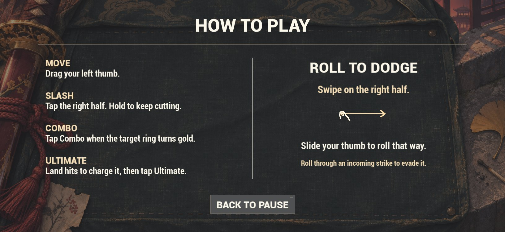
The climb
Each section has its own floor plans, look, music and dress for the undying. No floor is a hand-built level file: the game lays out every one in code when Rin arrives.
Hana texts between floors. The founder's announcements still play: Residents, please remain in your units. You are safe. You are forever.

The conservatory and Hana's rooftop garden. The mist is thickest here.
Orchestra, ballrooms still decorated, guests still in evening wear.
The track, the pool, the sky gardens and the hotel.
The flats the residents paid forever for. The tower core, and its lockdown, is on floor 50.
Trial wards and labs. This is where Rin saw the first subjects.
Hōrai Life's offices. The staff stayed late for the gala and are still at work.
The running joke
"Zombie" is a rude word. They prefer "undying".
Resident Services, Hōrai Life
Rin calls them zombies. So does the title. The residents find it politically incorrect, and each one objects in its own voice.
Whisper cites the conduct policy. Falcifer says it is what the weeds call them. Subject 001 would like person-first language. The gala guests find it simply vulgar. Only the Collector, a trophy hunter, agrees with her.
Rin has a comeback for each of them.
The cast

The ronin
Hana's bodyguard for three years, dismissed a week before the gala for saying what she saw. Dry, terse, unimpressed. She walks in through the lobby with her family's sword.
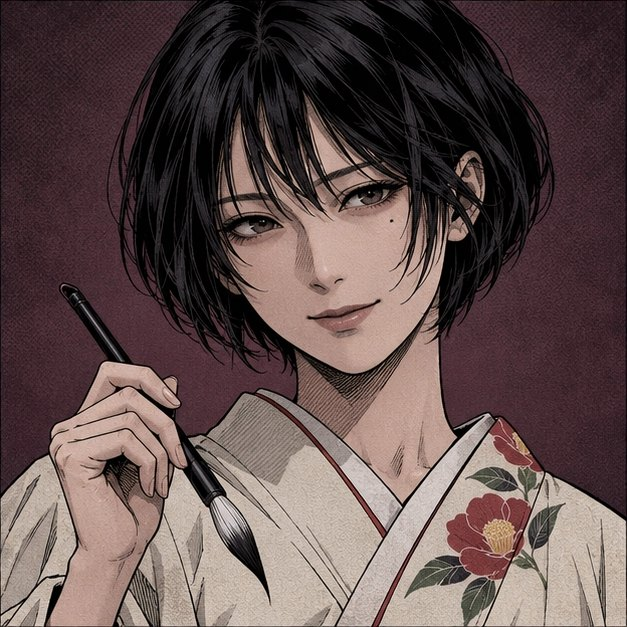
The one at the top
The founder's daughter, confined to the roof. She taught Rin calligraphy in the long hours. Her one text started the climb: Come up. Please.
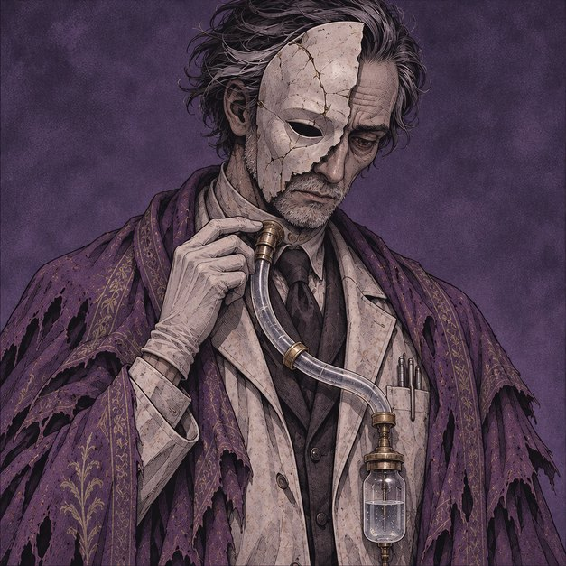
The founder
He built Hōrai Life to keep his dying daughter alive. A broken father, not a simple villain. His announcements still loop: You are safe. You are forever.
The guardians
Guardians are introduced with a freeze frame, a title card and a joke, then fought with scripted beats and banter. Bosses of a section are the Elders: board members and the earliest trial subjects, undying longest.
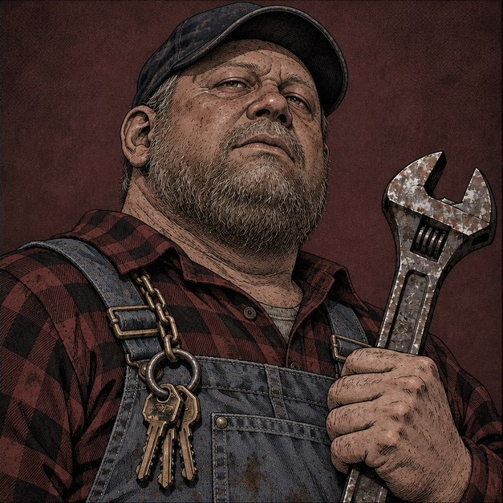
Head of Maintenance, first shift
Still on shift, because stopping the pumps would cut off water to the flats upstairs. Plants his boots and swings a pipe wrench across the bay.
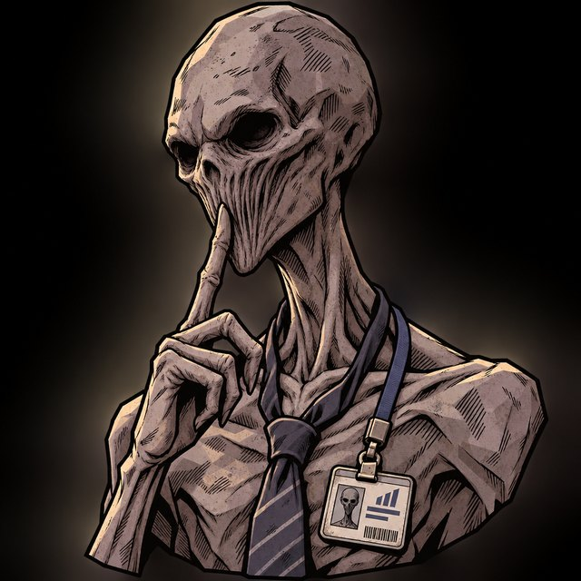
Head of Compliance
Quotes conduct policy, calls HR, and steps to Rin's blind side. Holds the garden override and, later, residential appeals.
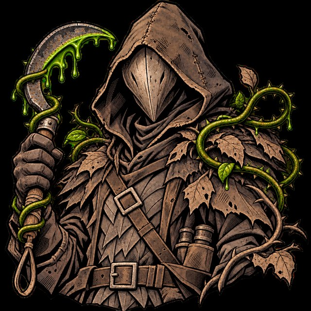
Head of Landscaping
Composted once. Came back perennial. Hooded and faceless under a mantle of thorns, with a sickle dripping sap. Vines burst from the floor where it points.
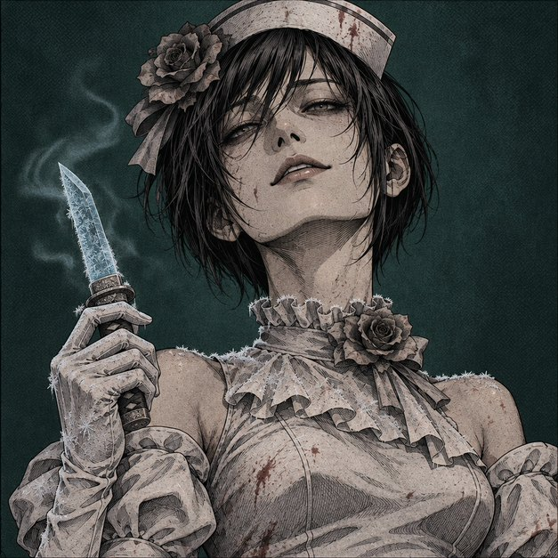
Night nurse. Yes, we have a sexy nurse too
Not a widow herself: she makes them. Circles in rounds, feints up close, and throws frost that freezes Rin for a free cut.
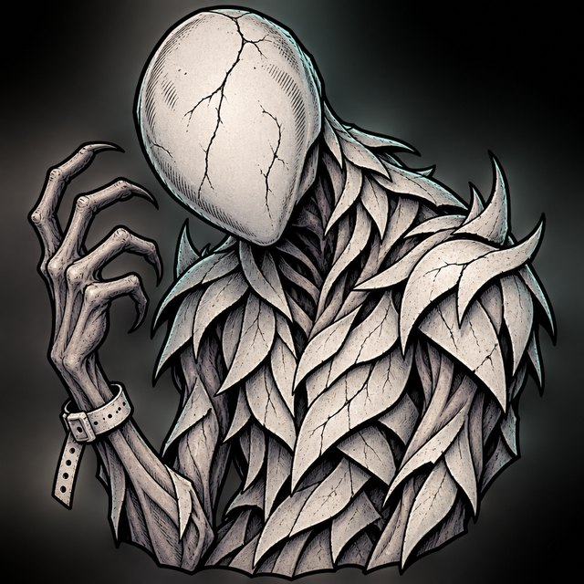
The Clinic's first success
Still talks like a consent form and would prefer person-first language. Charges, then reels when it misses.
Chair of the Owners' Assembly
Still keeps the minutes. Rings for order and a brass wave crosses the chamber; on the second reading he rings twice.
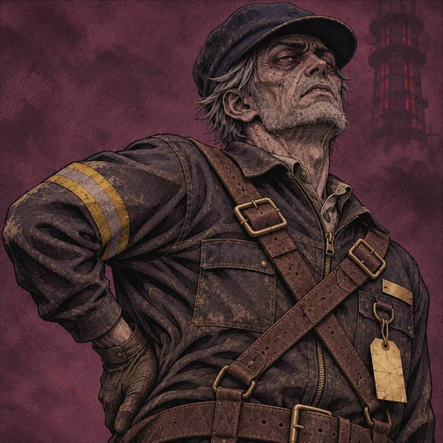
Last delivery
Still waiting for a signature. The runaway trolley owns his lane.
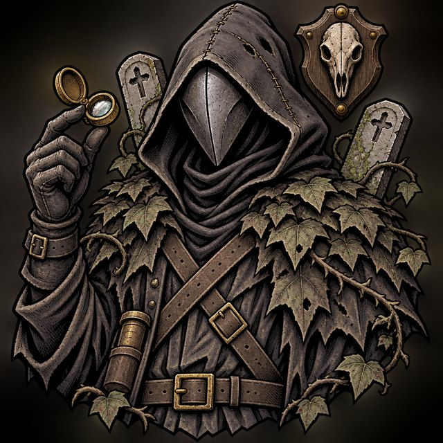
Trophy hunter
A courteous Elder who has already labelled Rin's empty plaque. The only one in the tower who agrees with her about the z-word.
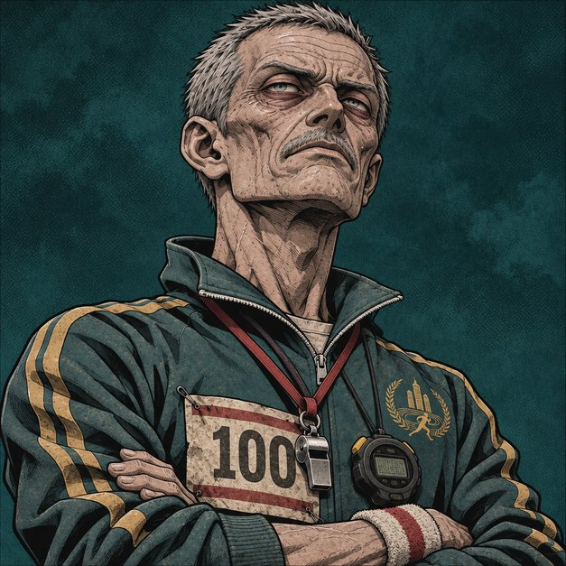
Coach of the Hundred-Lap Club
Sprints past Rin and comes back down the same lane.
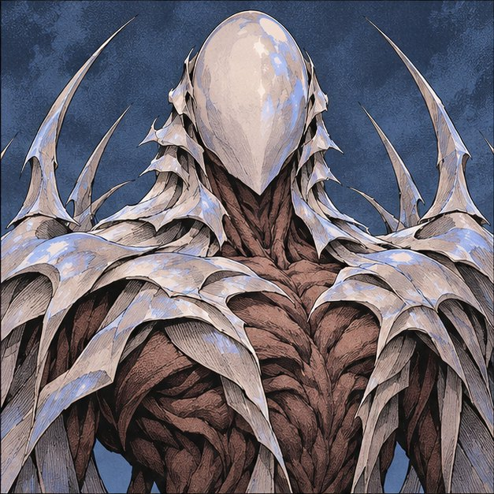
Keeper of the tide pool
Tends a rooftop pool built for someone who missed the sea, and calls undercurrents across the tiles.
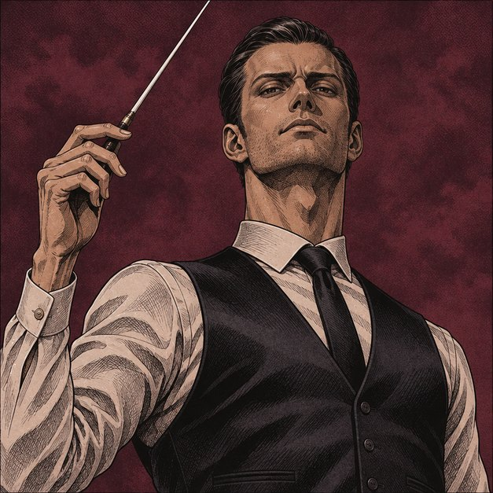
Gala orchestra, last movement
Still leads the orchestra after the chairs emptied. The floor sounds the beats in sequence.
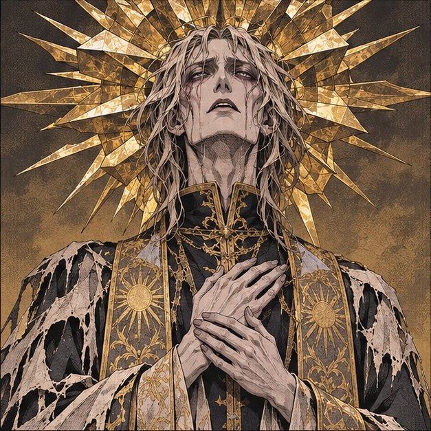
Dawn at midnight
The gala paid for sunrise on demand. Its performer still turns the lamps, sending spokes of light through the ballroom.
The Expedition
In the legend, China's First Emperor sent a sorcerer across the sea to find Mount Hōrai and bring back the elixir of immortality. He never came back. The third faction is that expedition again: a private military outfit in sealed suits, with a client known only as the Emperor.
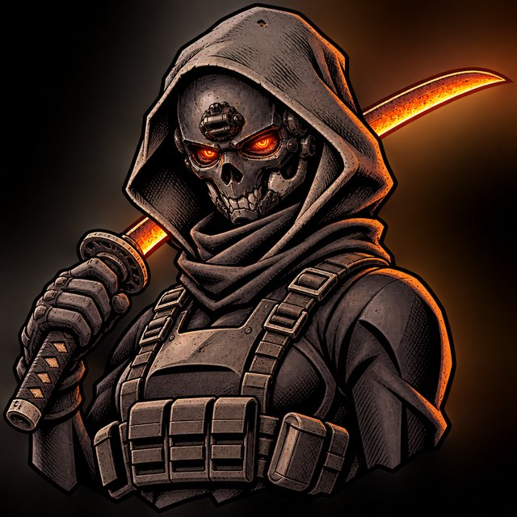
The rival blade
The Expedition's cyborg duellist. Her thermal blade only cauterises the undying, so she wants Rin's. Three duels, each faster and harder than the last.
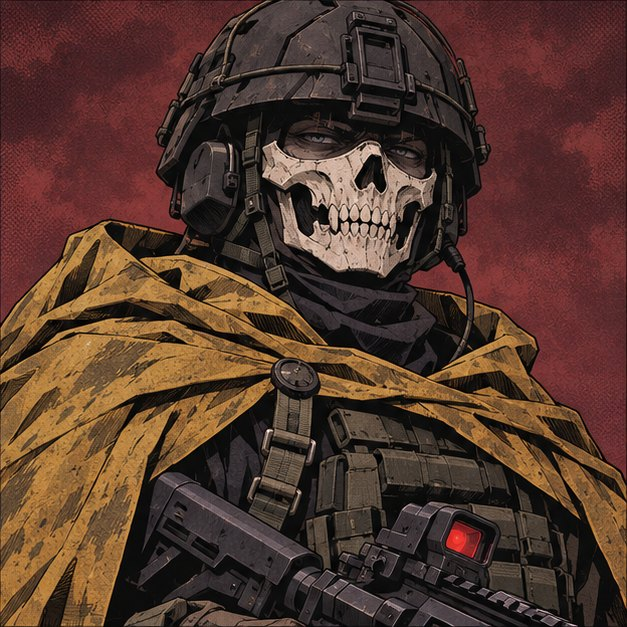
Field commander
Offers Rin a deal at the tower core and wants his people out with the sample.
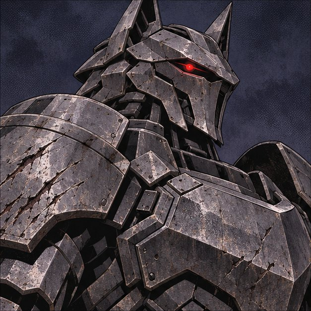
Breach frame
A person inside an Expedition breach frame, with a photograph tucked under the shield handle.
The cast, photographed
For the end credits, the ink portraits are being turned into photographs of the people behind them. The first four: Rin, Hana, Homura and the Winter Widow. And Rin at work.
Plan
Free to download, with floors 1 to 20 free and one purchase for the rest of the tower. iPhone first, landscape only. English text now; character voices, the full sound pass and outside testers come before release. It ships when each gate on the roadmap passes, not on a date.
Launch list
Leave an email and say which phone you play on. You get one message when the beta opens for your phone, and one on launch day. Nothing else.
Hi, I’m Pondd, the creator of Cut Cut Cut. Thanks for following the climb.
Explore my collection of apps, websites and creative projects below.
Tap the character or press Enter to change the dance.